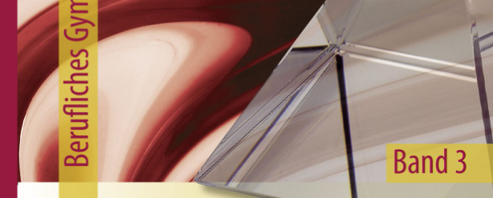

Vergleichen Sie die drei Optionen aus M4 unter Einbezug von M5.

Lehrbuch · Prozessmanagement / Projektmanagement S. 167; Projektorganisation S. 168 ca. 25 Minuten
Vergleichen Sie die drei Optionen aus M4 unter Einbezug von M5.

Lehrbuch · Prozessmanagement / Projektmanagement S. 167; Projektorganisation S. 168 ca. 25 MinutenEntscheiden Sie sich für eine Organisationsform oder begründete Kombination.
Lehrbuch · Prozessmanagement / Projektmanagement S. 167; Projektorganisation S. 168 ca. 20 MinutenLegen Sie Prozessowner, Entscheidungskompetenzen und Projektrollen fest.
Lehrbuch · Prozessmanagement / Projektmanagement S. 167; Projektorganisation S. 168 ca. 20 MinutenSie gestalten die Details; die folgende Arbeitshilfe strukturiert die Bearbeitung.
Vergleichen Sie A/B/C über Kundennähe, Standards, Abstimmung und Doppelzuständigkeit.
Legen Sie Entscheidungsrechte und Prozessowner ausdrücklich fest.
ca. 20 MinutenBeurteilen Sie die Organisationsoptionen aus M4 anhand der betrieblichen Anforderungen und der Rolleninteressen aus M5.
Machen Sie die entscheidenden Zielkonflikte sichtbar.
Lehrbuch · Prozessmanagement / Projektmanagement S. 167; Projektorganisation S. 168 ca. 25 MinutenLegen Sie Zielorganisation, Order-to-Delivery-Verantwortung und NL-Projektstruktur fest.
Lehrbuch · Prozessmanagement / Projektmanagement S. 167; Projektorganisation S. 168 ca. 20 MinutenVerbindliches Ergebnis: Digitaler Reorganisations-/Prozess-Blueprint · Entscheiden: begründete Entscheidung mit Grenzen
Organisieren Sie die größeren Arbeitsschritte eigenständig.
Beurteilen Sie die Organisationsoptionen aus M4 anhand der betrieblichen Anforderungen und der Rolleninteressen aus M5.
Machen Sie die entscheidenden Zielkonflikte sichtbar.
Lehrbuch · Prozessmanagement / Projektmanagement S. 167; Projektorganisation S. 168 ca. 30 MinutenLegen Sie Zielorganisation, Order-to-Delivery-Verantwortung und NL-Projektstruktur fest.
Lehrbuch · Prozessmanagement / Projektmanagement S. 167; Projektorganisation S. 168 ca. 25 MinutenVerbindliches Ergebnis: Digitaler Reorganisations-/Prozess-Blueprint · Entscheiden: begründete Entscheidung mit Grenzen
Sie bestimmen den Lösungsweg selbst. Der Prüfimpuls kann bei Bedarf genutzt werden.
Entwickeln Sie eine begründete Soll-Organisation und Projektstruktur aus M4/M5.
Prüfen Sie Ihre Wahl auf einen Konflikt zwischen Linie, Prozess und Projekt.
Verbindliches Ergebnis: Digitaler Reorganisations-/Prozess-Blueprint · Entscheiden: begründete Entscheidung mit Grenzen
Organisieren Sie Vorgehen, Rollen und Zwischenkontrollen eigenständig; alle fachlichen Anforderungen bleiben verbindlich.
Entwickeln Sie eine begründete Soll-Organisation und Projektstruktur aus M4/M5.
Lehrbuch · Prozessmanagement / Projektmanagement S. 167; Projektorganisation S. 168 ca. 45 MinutenVerbindliches Ergebnis: Digitaler Reorganisations-/Prozess-Blueprint · Entscheiden: begründete Entscheidung mit Grenzen